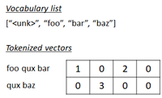

Neural Language Model#
Basic (Word Prediction Example)
Here, we will go through an example of simple language model.
The language model is used for a variety of NLP tasks, such as, translation, transcription, summarization, question-answering, etc.
Here we will just train language model for text generation (i.e, next word prediction) with primitive neural networks.
Unlike previous examples , language model will recognize the order of words in the sequence. (You don’t need other special architecture to detect the sequence of words, such as 1D convolution, any more.)
RNN-based specialized architecture (such as, LSTM, GRU, etc) can also be used to train in advanced language model. Furthermore, a lot of transformer-based algorithms are widely used in today’s SOTA language models.
In this example, we’ll briefly apply primitive feed-forward networks.
See the following diagram for entire network in this primitive example.
üëâ First in this network, the sequence of last 5 words is embedded into the list of vectors.
üëâ Embedded vectors are then concatenated into a single vector, and this vector is used for the next word‚Äôs prediction.
Note that this model won’t care the long past context
For example, even when the following sentence is given,
“In the United States, the president has now been”
It won’t care the context “In the United States” when it refers the last 5 words in the network. (It might then predict the incorrect word in this context and the accuracy won’t also be so high in this example. In the later examples, we will address this problem.)
Nevertheless, the neural language models will be well-generalized more than traditional statistical models for unseen data.
For instance, if “red shirt” and “blud shirt” occurs in training set, “green shirt” (which is not seen in training set) will also be predicted by the trained neural model, because the model knows that “red”, “blue”, and “green” occur in the same context.
As you can see in this example, the language model can be trained with large unlabeled data (not needing for the labeled data), and this approach is very important for the growth of today’s neural language models. This learning method is called self-supervised learning.
A lot of today’s SOTA algorithms (such as, BERT, T5, GPT, etc) learn a lot of language properties with large corpus in this unsupervised way (such as, masked word’s prediction, next word’s prediction), and can then be fine-tuned for specific downstream tasks with small amount of labeled data by transfer approach.
As you saw in custom embedding example, the word embedding will also be a byproduct in this example.
üëâ In these examples of this repository, We‚Äôll apply word-level (word-to-word) tokenization, but you can also use character-level (character-to-character) model, which can learn unseen words with signals - such as, prefixes (e.g, ‚Äúun‚Ķ‚Äù, ‚Äúdis‚Ķ‚Äù), suffixes (e.g, ‚Äú‚Ķed‚Äù, ‚Äú‚Ķing‚Äù), capitalization, or presence of certain characters (e.g, hyphen, digits), etc.
üëâ Subword tokenization is the popular method used in today‚Äôs architecture (such as, Byte Pair Encoding in GPT-2), in which a set of commonly occurring word segments (like ‚Äúcious‚Äù, ‚Äúing‚Äù, ‚Äúpre‚Äù, etc) is involved in a vocabulary list.
See here for SentencePiece tokenization in non-English languages.
Subword Tokenization#
Usually we use a finite vocabulary set, but in many languages with complex morphologies or word structures, this doesn’t make much sense. So mapping a single word to an embedding vector may just be something specific to English.
The byte-pair encoding algorithm is a go-between between the 2 options: looking at language at the character-level and looking at language at the word-level. This algorithm learns a vocabulary from subword tokens or tokens that represent parts of words.
Figure 1. Byte-pair encoding algorithm.
Before, in word2vec, we focused on pretrained word embeddings. This draws on the assumption that the downstream NLP task will have enough data to provide sufficient context for the word embeddings to be contextualized in your task. The model would not be pretrained.
However, in modern deep learning and NLP, we pretrain both the word embeddings and the model.
The pretraining/finetuning paradigm is immensely successful in NLP (and also other fields of AI).
Install required packages#
!pip install torch==2.3.0 torchtext==0.18.0 --extra-index-url https://download.pytorch.org/whl/cu114
Prepare data#
We will again use short description text in news papers dataset.
Before starting, please download News_Category_Dataset_v2.json (collected by HuffPost) in Kaggle.
import pandas as pd
df = pd.read_json("News_Category_Dataset_v3.json",lines=True)
train_data = df["short_description"]
train_data
0 Health experts said it is too early to predict...
1 He was subdued by passengers and crew when he ...
2 "Until you have a dog you don't understand wha...
3 "Accidentally put grown-up toothpaste on my to...
4 Amy Cooper accused investment firm Franklin Te...
...
209522 Verizon Wireless and AT&T are already promotin...
209523 Afterward, Azarenka, more effusive with the pr...
209524 Leading up to Super Bowl XLVI, the most talked...
209525 CORRECTION: An earlier version of this story i...
209526 The five-time all-star center tore into his te...
Name: short_description, Length: 209527, dtype: object
To get the better performance (accuracy), we standarize the input text as follows.
Make all words to lowercase in order to reduce words
Make “-” (hyphen) to space
Remove all punctuation except “ ’ “ (e.g, Ken’s bag) and “&” (e.g, AT&T)
train_data = train_data.str.lower()
train_data = train_data.str.replace("-", " ", regex=True)
train_data = train_data.str.replace("[^'\&\w\s]", "", regex=True)
train_data = train_data.str.strip()
train_data
<>:3: SyntaxWarning: invalid escape sequence '\&'
<>:3: SyntaxWarning: invalid escape sequence '\&'
/var/folders/7m/04ssj6n96q984_6wsnr60dg00000gn/T/ipykernel_72884/2039005710.py:3: SyntaxWarning: invalid escape sequence '\&'
train_data = train_data.str.replace("[^'\&\w\s]", "", regex=True)
0 health experts said it is too early to predict...
1 he was subdued by passengers and crew when he ...
2 until you have a dog you don't understand what...
3 accidentally put grown up toothpaste on my tod...
4 amy cooper accused investment firm franklin te...
...
209522 verizon wireless and at&t are already promotin...
209523 afterward azarenka more effusive with the pres...
209524 leading up to super bowl xlvi the most talked ...
209525 correction an earlier version of this story in...
209526 the five time all star center tore into his te...
Name: short_description, Length: 209527, dtype: object
Finally we add <start> and <end> tokens in each sequence as follows, because these are important information for learning the ordered sequence.
this is a pen –> <start> this is a pen <end>
train_data = [" ".join(["<start>", x, "<end>"]) for x in train_data]
# print first row
train_data[1]
"<start> <start> he was subdued by passengers and crew when he fled to the back of the aircraft after the confrontation according to the us attorney's office in los angeles <end> <end>"
Generate sequence inputs#
Same as in previous examples, we will generate the sequence of word’s indices (i.e, tokenize) from text.

First we create a list of vocabulary (vocab).
import torchtext
from torchtext.data.utils import get_tokenizer
from torchtext.vocab import build_vocab_from_iterator
torchtext.disable_torchtext_deprecation_warning()
max_word = 50000
# create tokenizer
tokenizer = get_tokenizer("basic_english")
# define tokenization function
def yield_tokens(train_data):
for text in train_data:
tokens = tokenizer(text)
yield tokens
# build vocabulary list
vocab = build_vocab_from_iterator(
yield_tokens(train_data),
specials=["<unk>"],
max_tokens=max_word,
)
vocab.set_default_index(vocab["<unk>"])
# get list for index-to-word, and word-to-index.
itos = vocab.get_itos()
stoi = vocab.get_stoi()
In this example, we separate each sentence into 5 preceding word’s sequence and word label (total 6 words) as follows.
import numpy as np
seq_len = 5 + 1
input_seq = []
for s in train_data:
token_list = vocab(tokenizer(s))
for i in range(seq_len, len(token_list) + 1):
seq_list = token_list[i-seq_len:i]
input_seq.append(seq_list)
print("The number of training input sequence :{}".format(len(input_seq)))
input_seq = np.array(input_seq)
The number of training input sequence :4125266
Separate into inputs and labels.
X, y = input_seq[:,:-1], input_seq[:,-1]
X
array([[ 2, 2, 141, 905, 68],
[ 2, 141, 905, 68, 13],
[ 141, 905, 68, 13, 10],
...,
[ 2066, 44373, 6705, 3480, 4],
[44373, 6705, 3480, 4, 1347],
[ 6705, 3480, 4, 1347, 1]])
y
array([ 49, 685, 46, ..., 4, 1354, 1])
Build network#
Now we build network for our primitive language model. (See above for details about this model.)
import torch
import torch.nn as nn
embedding_dim = 64
device = torch.device("cuda" if torch.cuda.is_available() else "cpu")
class SimpleLM(nn.Module):
def __init__(self, vocab_size, embedding_dim, hidden_dim=256):
super().__init__()
self.embedding = nn.Embedding(
vocab_size,
embedding_dim,
)
self.hidden = nn.Linear(embedding_dim*(seq_len - 1), hidden_dim)
self.classify = nn.Linear(hidden_dim, vocab_size)
self.relu = nn.ReLU()
def forward(self, inputs):
outs = self.embedding(inputs)
outs = torch.flatten(outs, start_dim=1)
outs = self.hidden(outs)
outs = self.relu(outs)
logits = self.classify(outs)
return logits
model = SimpleLM(vocab.__len__(), embedding_dim).to(device)
Now let’s generate text with this model.
The generated result is messy, because it’s still not trained at all.
start_index = stoi["<start>"]
end_index = stoi["<end>"]
max_output = 128
def pred_output(sentence, progressive_output=True):
test_seq = vocab(tokenizer(sentence))
test_seq.insert(0, start_index)
for loop in range(max_output):
input_tensor = torch.tensor([test_seq[-5:]], dtype=torch.int64).to(device)
pred_logits = model(input_tensor)
pred_index = pred_logits.argmax()
test_seq.append(pred_index.item())
if progressive_output:
for i in test_seq:
print(itos[i], end=" ")
print("\n")
if pred_index.item() == end_index:
break
return test_seq
generated_seq = pred_output("in the united states president", progressive_output=False)
for i in generated_seq:
print(itos[i], end=" ")
print("\n")
<start> in the united states president inexperienced sicario alicante caffeinated roberto tiptoeing reporters iberian palatable goer hangover universal unusually eats untrue weighed vii regularly yakama tackled tables panamanian baptismal outdoor lgbtqia adeline impartial childrearing disavowed diner dodgers tormenting pinder ruff stronghold johnny prince lifetime patmore esperanza diner healthier mulling ossoff baptismal beanery invisible complacently 4500 denunciation tasking reckons cars impartial wider 513 tech honored ist batmans reinforcing encountering conditioned thewrap denunciation 353 1776 2075 confess alberta 132000 overfeeding spokesmodels beauties balart entertainers leadership diagonal blacktranslivesmatter archivist lgbtqia daniela cars chariot invisible sequences paso adweek diner california ruff integral diner certification revisionism ego brush 28427 cormorants disavowed biswo artistchef marinating st universal dimmer jamar confrontation fran brush blackvoices prophet ethel bulky spotting shared willpower permit 19 1900 blacktranslivesmatter bulbs ego xenophobic condolence impartial animalistic rogue
Train#
Now let’s train our network.
Here we have used loss and accuracy for evaluation, but the metrics to evaluate text generation task is not so easy. (Because simply checking an exact match to a reference text is not optimal.)
In practice, use some common metrics available in language models, such as, BLEU or ROUGE. (See here for these metrics.)
If you are running google colab, execute it in gpu and can increase the epochs as well, for demo i am using only 1 Epoch
from torch.utils.data import DataLoader
from torch.nn import functional as F
num_epochs = 1
dataloader = DataLoader(
list(zip(y, X)),
batch_size=512,
shuffle=True,
)
optimizer = torch.optim.AdamW(model.parameters(), lr=0.001)
for epoch in range(num_epochs):
for labels, seqs in dataloader:
# optimize
optimizer.zero_grad()
logits = model(seqs.to(device))
loss = F.cross_entropy(logits, labels.to(device))
loss.backward()
optimizer.step()
# calculate accuracy
pred_labels = logits.argmax(dim=1)
num_correct = (pred_labels == labels.to(device)).float().sum()
accuracy = num_correct / len(labels)
print("Epoch {} - loss: {:2.4f} - accuracy: {:2.4f}".format(epoch+1, loss.item(), accuracy), end="\r")
print("")
Generate text#
In this example, I’ll just show you how it generates a sentence by predicting the possibility of vocabularies over the given recent 5 words, until predicting the end-of-sequence.
This model doesn’t recognize the past context, because this model refers only last 5 words.
üìî Note : This approach - which repeatedly picks up the next word with maximum probability in each timestep and generates a consequent sentence - is called greedy search.
For instance, when it retrieves the next word with probability 0.8 and the second next word with probability 0.2, the joint probability will then be 0.8 x 0.2 = 0.16.
On the other hand, when it retrieves the next word with smaller probability 0.6 but the second next word with so higher probability 0.9, the joint probability becomes 0.54 and it’s then be larger than the former one. This example shows that the greedy search algorithm may sometimes lead to sub-optimal solutions (i.e, label-bias problems). It’s known that this algorithm also tends to produce repetitive outputs.
For this reason, greedy search algorithm is rarely used in practical inference in language models, and a popular method known as beam search is used to get more optimal solutions in production.
_ = pred_output("in the united states president", progressive_output=True)
_ = pred_output("the man has accused by", progressive_output=True)
_ = pred_output("now he was expected to", progressive_output=True)
<start> in the united states president <end>
<start> the man has accused by the
<start> the man has accused by the world
<start> the man has accused by the world of
<start> the man has accused by the world of the
<start> the man has accused by the world of the world
<start> the man has accused by the world of the world <end>
<start> now he was expected to be
<start> now he was expected to be a
<start> now he was expected to be a new
<start> now he was expected to be a new year
<start> now he was expected to be a new year old
<start> now he was expected to be a new year old <end>